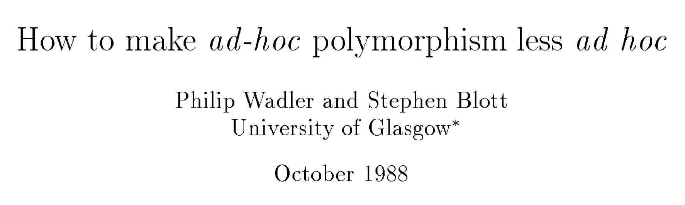

We have seen
Bottling type/computation patterns with:
- Polymorphic types
- Higher-order functions
Next
Bottle more patterns more conveniently with:
- Type classes
- Monads
Type Classes: Outline
- Why type classes?
- Standard type classes
- Creating new instances
- Using type classes
- Creating new type classes
Overloading Operators: Arithmetic
The + operator works for a bunch of different types.
For Integer:
λ> 2 + 3
5for Double precision floats:
λ> 2.9 + 3.5
6.4
Overloading Comparisons
Similarly we can compare different types of values
λ> 2 == 3
False
λ> [2.9, 3.5] == [2.9, 3.5]
True
λ> ("cat", 10) < ("cat", 2)
False
λ> ("cat", 10) < ("cat", 20)
True
Operator Overloading
Seems unremarkable?
Languages have supported “operator overloading” since the dawn of time
Haskell has no caste system
No distinction between operators and functions
- All are first class citizens!
You can implement functions like (+) and (==) yourself from scratch!
- But then, what type do we give them?
QUIZ
Which of the following type annotations would work for (+) ?
(A) (+) :: Int -> Int -> Int
(B) (+) :: Double -> Double -> Double
(C) (+) :: a -> a -> a
(D) Any of the above
(E) None of the above
Int -> Int -> Int is bad because?
- Then we cannot add
Doubles!
Double -> Double -> Double is bad because?
- Then we cannot add
Ints!
a -> a -> a is bad because?
I don’t know how to implement this
For some
as it doesn’t make sense: how do I add twoBools? Or twoChars?
Ad-hoc Polymorphism
We have seen parametric polymorphism:
-- Append two lists:
(++) :: [a] -> [a] -> [a]
(++) [] ys = ys
(++) (x:xs) ys = x:(xs ++ ys)(++) works for all list types
Doesn’t care what the list elements are
The same implementation works for
a = Int,a = Bool, etc.
Now we need ad-hoc polymorphism:
(+) :: a -> a -> a -- Almost, but not really
(+) x y = ???(+) should work for many (but not all) types
- Different implementation for
a = Int,a = Double, etc.
Ad-hoc means “created or done for a particular purpose as necessary.”
Type Classes for Ad Hoc Polymorphism
Haskell solves this problem with a mechanism called type classes
- Introduced by Wadler and Blott

This is a very cool and well-written paper! Read it!
Constrained Types
Let’s ask GHCi:
λ> :type (+)
(+) :: (Num a) => a -> a -> aWe call this a constrained (or qualified) type
Read it as:
(+)takes in twoavalues and returns anavalue
- for any type
athat - is an instance of the
Numtype class- or, in Java terms: implements the
Numinterface
- or, in Java terms: implements the
The “(Num a) =>” part is called the constraint
Some types are Nums:
- For example,
Int,Integer,Double - Values of those types can be passed to
(+):
λ> 2 + 3
5
Other types are not Nums:
- For example,
Bool,Char,String, function types, … - Values of those types cannot be passed to
(+):
λ> True + False
<interactive>:15:6:
No instance for (Num Bool) arising from a use of ‘+’
In the expression: True + False
In an equation for ‘it’: it = True + False
Aha! Now those no instance for error messages should make sense!
- Haskell is complaining that
TrueandFalseare of typeBool - and that
Boolis not an instance ofNum
QUIZ
What would be a reasonable type for the equality operator?
(A) (==) :: a -> a -> a
(B) (==) :: a -> a -> Bool
(C) (==) :: (Eq a) => a -> a -> a
(D) (==) :: (Eq a) => a -> a -> Bool
(E) None of the above
Type Classes: Outline
- Why type classes? [done]
- Standard type classes
- Creating new instances
- Using type classes
- Creating new type classes
What is a type class?
A type class is a collection of methods (functions, operations) that must exist for every instance
What are some useful type classes in the Haskell standard library?
The Eq Type Class
The simplest typeclass is Eq:
class Eq a where
(==) :: a -> a -> Bool
(/=) :: a -> a -> BoolA type T is an instance of Eq if there are two functions
(==) :: T -> T -> Boolthat determines if twoTvalues are equal(/=) :: T -> T -> Boolthat determines if twoTvalues are disequal
Lifehack: You can ask GHCi about a type class and it will tell you
- its methods
- all the instances it knows
λ> :info Eq
class Eq a where
(==) :: a -> a -> Bool
(/=) :: a -> a -> Bool
...
instance Eq Int
instance Eq Double
...
The Num Type Class
The type class Num requires that instances define a bunch of arithmetic operations
class Num a where
(+) :: a -> a -> a
(-) :: a -> a -> a
(*) :: a -> a -> a
negate :: a -> a
abs :: a -> a
signum :: a -> a
fromInteger :: Integer -> a
The Show Type Class
The type class Show requires that instances be convertible to String
class Show a where
show :: a -> StringIndeed, we can test this on different (built-in) types
λ> show 2
"2"
λ> show 3.14
"3.14"
λ> show (1, "two", ([],[],[]))
"(1,\"two\",([],[],[]))"
The Ord Typeclass
The type class Ord is for totally ordered values:
class Eq a => Ord a where
(<) :: a -> a -> Bool
(<=) :: a -> a -> Bool
(>) :: a -> a -> Bool
(>=) :: a -> a -> BoolFor example:
λ> 2 < 3
True
λ> "cat" < "dog"
True
Note Eq a => in the class definition!
A type T is an instance of Ord if
Tis also an instance ofEq, and- It defines functions for comparing values for inequality
Standard Typeclass Hierarchy
Haskell comes equipped with a rich set of built-in classes.
In the above picture, there is an edge from Eq to Ord because for something to be an Ord it must also be an Eq.
Type Classes: Outline
- Why type classes? [done]
- Standard type classes [done]
- Creating new instances
- Using type classes
- Creating new type classes
Showing Your Colors
Let’s create a new datatype:
data Color = Red | Greenand play with it in GHCi:
λ> let col = Red
λ> :type col
x :: ColorSo far, so good… but we cannot view them!
λ> col
<interactive>:1:0:
No instance for (Show Color)
arising from a use of `print' at <interactive>:1:0
Possible fix: add an instance declaration for (Show Color)
In a stmt of a 'do' expression: print itWhy is this happening?
When we type an expression into GHCi it:
- evaluates it to a value, then
- calls
showon that value to convert it to a string
But our new type is not an instance of Show!
We also cannot compare colors!
λ> col == Green
<interactive>:1:0:
No instance for (Eq Color)
arising from a use of `==' at <interactive>:1:0-5
Possible fix: add an instance declaration for (Eq Color)
In the expression: col == Green
In the definition of `it': it = col == Green
How do we add an instance declaration for Show Color and Eq Color?
Creating Instances
To tell Haskell how to show or compare values of type Color
- create instances of
EqandShowfor that type:
instance Show Color where
show Red = "Red"
show Green = "Green"
instance Eq Color where
???
EXERCISE: Creating Instances
Create an instance of Eq for Color:
data Color = Red | Green
instance Eq Color where
???
-- Reminder:
class Eq a where
(==) :: a -> a -> Bool
(/=) :: a -> a -> Bool
Automatic Derivation
This is silly: we should be able to compare and view Colors “automatically”!
Haskell lets us automatically derive functions for some classes in the standard library.
To do so, we simply dress up the data type definition with
data Color = Red | Green
deriving (Eq, Show) -- please generate instances automatically!Now we have
λ> let col = Red
λ> col
Red
λ> col == Red
True
QUIZ
Which of the following Eq instances for Color are valid?
-- (A)
instance Eq Color where
(==) Red Red = True
(==) Green Green = True
(==) _ _ = False
-- (B)
instance Eq Color where
(/=) Red Red = False
(/=) Green Green = False
(/=) _ _ = True
-- (C) Neither of the above
-- (D) Either of the above
Default Method Implementations
The Eq class is actually defined like this:
class Eq a where
(==) :: a -> a -> Bool
(==) x y = not (x /= y) -- Default implementation!
(/=) :: a -> a -> Bool
(/=) x y = not (x == y) -- Default implementation!
The class provides default implementations for its methods
An instance can define any of the two methods and get the other one for free
Use
:infoto find out which methods you have to define:
λ> :info Eq
class Eq a where
(==) :: a -> a -> Bool
(/=) :: a -> a -> Bool
{-# MINIMAL (==) | (/=) #-} -- HERE HERE!!!
QUIZ
If you define:
instance Eq Color where
-- Nothing here!what will the following evaluate to?
λ> Red == Green(A) Type error
(B) Runtime error
(C) Runs forever
(D) False
(E) True
Type Classes: Outline
- Why type classes? [done]
- Standard type classes [done]
- Creating new instances [done]
- Using type classes
- Creating new type classes
Using Typeclasses
Now let’s see how to write code that uses type classes!
Let’s build a small library for Environments mapping keys k to values v
In Nano, we represented environments as
[(Id, Value)]But what if I want to have keys that are not
Idand values that are notValue?What if I want to change the representation to something more efficient?
Let’s define a new polymorphic datatype Env!
data Env k v
= Def v -- default value to be used for missing keys
| Bind k v (Env k v) -- bind key `k` to the value `v`
deriving (Show)
The API
We want to be able to do the following with Env:
-- >>> let env0 = add "cat" 10.0 (add "dog" 20.0 (Def 0))
-- >>> get "cat" env0
-- 10
-- >>> get "dog" env0
-- 20
-- >>> get "horse" env0
-- 0
Okay, lets implement!
-- | 'add key val env' returns a new env
-- | that additionally maps `key` to `val`
add :: k -> v -> Env k v -> Env k v
add key val env = ???
-- | 'get key env' returns the value of `key`
-- | and the "default" if no value is found
get :: k -> Env k v -> v
get key env = ???
But we get a type error!
Constraint Propagation
Lets delete the types of add and get and see what Haskell says their types are!
λ> :type get
get :: (Eq k) => k -> v -> Env k v -> Env k vHaskell tells us that we can use any k type as a key as long as this type is an instance of the Eq typeclass.
How, did GHC figure this out?
- If you look at the code for
getyou’ll see that we check if two keys are equal!
Exercise
Write an optimized version of
addthat ensures the keys are in increasing ordergetthat gives up and returns the “default” the moment we see a key that’s larger than the one we’re looking for
(How) do you need to change the type of Env?
(How) do you need to change the types of get and add?
Explicit Type Annotations
Consider the standard typeclass Read:
-- Not the actual definition, but almost:
class Read a where
read :: String -> aRead is the opposite of Show
It requires that every instance
Tcan parse a string and turn it intoTJust like with
Show, most standard type are instances ofRead:Int,Integer,Double,Char,Bool, etc
QUIZ
What does the expression read "2" evaluate to?
(A) Type error
(B) "2"
(C) 2
(D) 2.0
(E) Run-time error
Haskell is foxed!
- Doesn’t know what type to convert the string to!
- Doesn’t know which of the
readfunctions to run!
Did we want an Int or a Double or maybe something else altogether?
Thus, here an explicit type annotation is needed to tell Haskell what to convert the string to:
λ> (read "2") :: Int
2
λ> (read "2") :: Float
2.0
λ> (read "2") :: String
???Note the different results due to the different types.
Type Classes: Outline
- Why type classes? [done]
- Standard type classes [done]
- Creating new instances [done]
- Using type classes [done]
- Creating new type classes
Creating Typeclasses
Typeclasses are useful for many different things
- Improve readability
- Promote code reuse
We will see some very interesting use cases over the next few lectures.
Lets conclude today’s class with a quick example that provides a taste.
JSON
JavaScript Object Notation or JSON is a simple format for transferring data around. Here is an example:
{ "name" : "Nadia"
, "age" : 37.0
, "likes" : [ "poke", "coffee", "pasta" ]
, "hates" : [ "beets" , "milk" ]
, "lunches" : [ {"day" : "mon", "loc" : "rubios"}
, {"day" : "tue", "loc" : "home"}
, {"day" : "wed", "loc" : "curry up now"}
, {"day" : "thu", "loc" : "home"}
, {"day" : "fri", "loc" : "santorini"} ]
}Each JSON value is either
a base value like a string, a number or a boolean,
an (ordered) array of values, or
an object, i.e. a set of string-value pairs.
A JSON Datatype
We can represent (a subset of) JSON values with the Haskell datatype
data JVal
= JStr String
| JNum Double
| JBool Bool
| JObj [(String, JVal)]
| JArr [JVal]
deriving (Eq, Ord, Show)
The above JSON value would be represented by the JVal
js1 =
JObj [("name", JStr "Nadia")
,("age", JNum 36.0)
,("likes", JArr [ JStr "poke", JStr "coffee", JStr "pasta"])
,("hates", JArr [ JStr "beets", JStr "milk"])
,("lunches", JArr [ JObj [("day", JStr "mon")
,("loc", JStr "rubios")]
, JObj [("day", JStr "tue")
,("loc", JStr "home")]
, JObj [("day", JStr "wed")
,("loc", JStr "curry up now")]
, JObj [("day", JStr "thu")
,("loc", JStr "home")]
, JObj [("day", JStr "fri")
,("loc", JStr "santorini")]
])
]
Serializing Haskell Values to JSON
Lets write a small library to serialize Haskell values as JSON
- Base types
String,Double,Boolare serialized as base JSON values - Lists are serialized into JSON arrays
- Lists of key-value pairs are serialized into JSON objects
We could write a bunch of functions like
doubleToJSON :: Double -> JVal
doubleToJSON = JNum
stringToJSON :: String -> JVal
stringToJSON = JStr
boolToJSON :: Bool -> JVal
boolToJSON = JBool
Serializing Lists
But what about collections, namely lists of things?
doublesToJSON :: [Double] -> JVal
doublesToJSON xs = JArr (map doubleToJSON xs)
boolsToJSON :: [Bool] -> JVal
boolsToJSON xs = JArr (map boolToJSON xs)
stringsToJSON :: [String] -> JVal
stringsToJSON xs = JArr (map stringToJSON xs)
This is getting rather tedious
- Lots of repetition :(
Serializing Collections (refactored with HOFs)
You could abstract by making the element-converter a parameter
listToJSON :: (a -> JVal) -> [a] -> JVal
listToJSON f xs = JArr (map f xs)
mapToJSON :: (a -> JVal) -> [(String, a)] -> JVal
mapToJSON f kvs = JObj [ (k, f v) | (k, v) <- kvs ]
But this is still rather tedious as you have to pass in the individual data converter (yuck)
λ> doubleToJSON 4
JNum 4.0
λ> listToJSON stringToJSON ["poke", "coffee", "pasta"]
JArr [JStr "poke",JStr "coffee",JStr "pasta"]
λ> mapToJSON stringToJSON [("day", "mon"), ("loc", "rubios")]
JObj [("day",JStr "mon"),("loc",JStr "rubios")]
This gets more hideous when you have richer objects like
lunches = [ [("day", "mon"), ("loc", "rubios")]
, [("day", "tue"), ("loc", "home")]
]because we have to go through gymnastics like
λ> listToJSON (mapToJSON stringToJSON) lunches
JArr [ JObj [("day",JStr "monday") ,("loc",JStr "rubios")]
, JObj [("day",JStr "tuesday") ,("loc",JStr "home")]
]Yikes. So much for readability
Is it too much to ask for a magical toJSON that just works?
Typeclasses To The Rescue
Lets define a typeclass that describes types a that can be converted to JSON.
class JSON a where
toJSON :: a -> JValNow, just make all the above instances of JSON like so
instance JSON Double where
toJSON = JNum
instance JSON Bool where
toJSON = JBool
instance JSON String where
toJSON = JStrThis lets us uniformly write
λ> toJSON 4
JNum 4.0
λ> toJSON True
JBool True
λ> toJSON "guacamole"
JStr "guacamole"
Bootstrapping Instances
The real fun begins when we get Haskell to automatically bootstrap the above functions to work for lists and key-value lists!
instance JSON a => JSON [a] where
toJSON xs = JArr [toJSON x | x <- xs]The above says, if a is an instance of JSON, that is, if you can convert a to JVal then here’s a generic recipe to convert lists of a values!
λ> toJSON [True, False, True]
JArr [JBln True, JBln False, JBln True]
λ> toJSON ["cat", "dog", "Mouse"]
JArr [JStr "cat", JStr "dog", JStr "Mouse"]or even lists-of-lists!
λ> toJSON [["cat", "dog"], ["mouse", "rabbit"]]
JArr [JArr [JStr "cat",JStr "dog"],JArr [JStr "mouse",JStr "rabbit"]]We can pull the same trick with key-value lists
instance (JSON a) => JSON [(String, a)] where
toJSON kvs = JObj [ (k, toJSON v) | (k, v) <- kvs ]after which, we are all set!
λ> toJSON lunches
JArr [ JObj [ ("day",JStr "monday"), ("loc",JStr "zanzibar")]
, JObj [("day",JStr "tuesday"), ("loc",JStr "farmers market")]
]
It is also useful to bootstrap the serialization for tuples (upto some fixed size) so we can easily write “non-uniform” JSON objects where keys are bound to values with different shapes.
instance (JSON a, JSON b) => JSON ((String, a), (String, b)) where
toJSON ((k1, v1), (k2, v2)) =
JObj [(k1, toJSON v1), (k2, toJSON v2)]
instance (JSON a, JSON b, JSON c) => JSON ((String, a), (String, b), (String, c)) where
toJSON ((k1, v1), (k2, v2), (k3, v3)) =
JObj [(k1, toJSON v1), (k2, toJSON v2), (k3, toJSON v3)]
instance (JSON a, JSON b, JSON c, JSON d) => JSON ((String, a), (String, b), (String, c), (String,d)) where
toJSON ((k1, v1), (k2, v2), (k3, v3), (k4, v4)) =
JObj [(k1, toJSON v1), (k2, toJSON v2), (k3, toJSON v3), (k4, toJSON v4)]
instance (JSON a, JSON b, JSON c, JSON d, JSON e) => JSON ((String, a), (String, b), (String, c), (String,d), (String, e)) where
toJSON ((k1, v1), (k2, v2), (k3, v3), (k4, v4), (k5, v5)) =
JObj [(k1, toJSON v1), (k2, toJSON v2), (k3, toJSON v3), (k4, toJSON v4), (k5, toJSON v5)]Now, we can simply write
hs = (("name" , "Nadia")
,("age" , 36.0)
,("likes" , ["poke", "coffee", "pasta"])
,("hates" , ["beets", "milk"])
,("lunches", lunches)
) which is a Haskell value that describes our running JSON example, and can convert it directly like so
js2 = toJSON hs
Serializing Environments
To wrap everything up, lets write a serializer for environments Env with String keys:
instance JSON (Env String v) where
toJSON env = ???and presto! our serializer just works
λ> env0
Bind "cat" 10.0 (Bind "dog" 20.0 (Def 0))
λ> toJSON env0
JObj [ ("cat", JNum 10.0)
, ("dog", JNum 20.0)
, ("def", JNum 0.0)
]
That’s all folks!